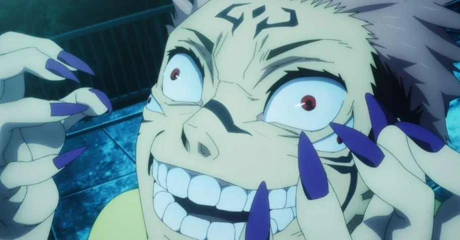
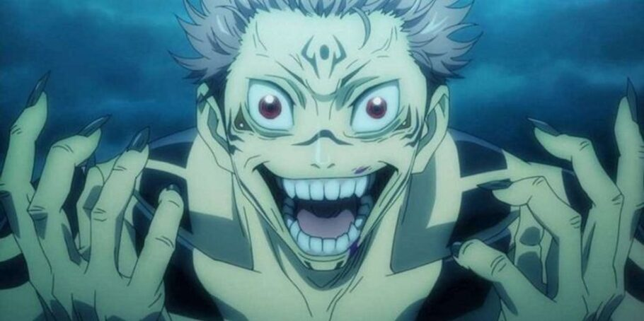

Ryomen não é apenas um personagem poderoso, mas também possui uma personalidade complexa e carismática. Ele exibe uma arrogância e confiança que refletem seu status como um dos seres mais poderosos do universo. Sua natureza sádica e prazer em causar dor e sofrimento são traços marcantes, mas ele também demonstra inteligência e astúcia, usando estratégias e manipulações para alcançar seus objetivos.
Gosto dos Dedos
Akutami revelou que eles têm gosto de sabão, não é de carne podre nem de nada do tipo, e a careta que o Yuji faz é por isso, eles não têm um gosto legal.

O que aconteceria se duas pessoas diferentes consumissem os dedos do Sukuna
Como a chance de sobreviver é de uma em um milhão, é muito provável que não veremos ninguém além do Yuji tendo consumido dedos do Sukuna em Jujutsu Kaisen. Vale ressaltar entretanto que caso isso aconteça, o poder máximo que essa pessoa poderia ater são 5 dedos do Sukuna, e Yuji com Sukuna certamente atropelaria essa pessoa sem dó nem piedade se isso acontecesse.

Qual a força dos dedos do Sukuna?
Um dedo equivale a um monstro de grau especial, dois dedos já é mais do que o dobro dessa força. Fushiguro quase morreu pra derrotar um inimigo de grau especial no final da primeira temporada do anime, ou seja, ele mal e mal conseguiria bater de frente com o Sukuna do começo do anime No arco de Shibuya, depois de consumir 15 dedos, Sukuna derrotou o Shikigami mais forte do Fushiguro sem nenhuma dificuldade, ou seja, é simplesmente algo inconcebível pra maioria dos feiticeiros Jujutsu.
Quantos anos Sukuna tem?
Na série "Jujutsu Kaisen", Sukuna é um ser antigo e poderoso, conhecido como Rei das Maldições. Sua idade exata não é especificada, mas ele existe há séculos, talvez até milênios. Ele é retratado como um ser extremamente antigo e poderoso, com uma história envolvendo muitas lendas e mitos dentro do universo da série.